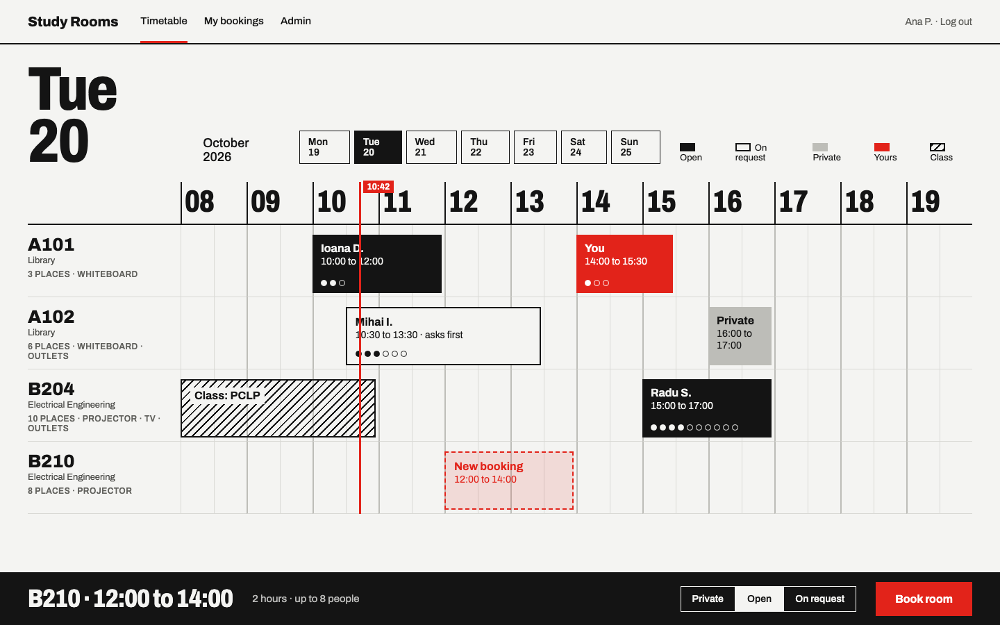
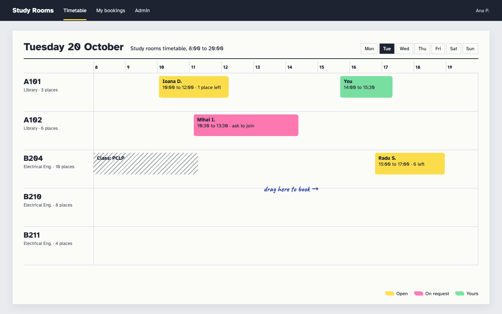
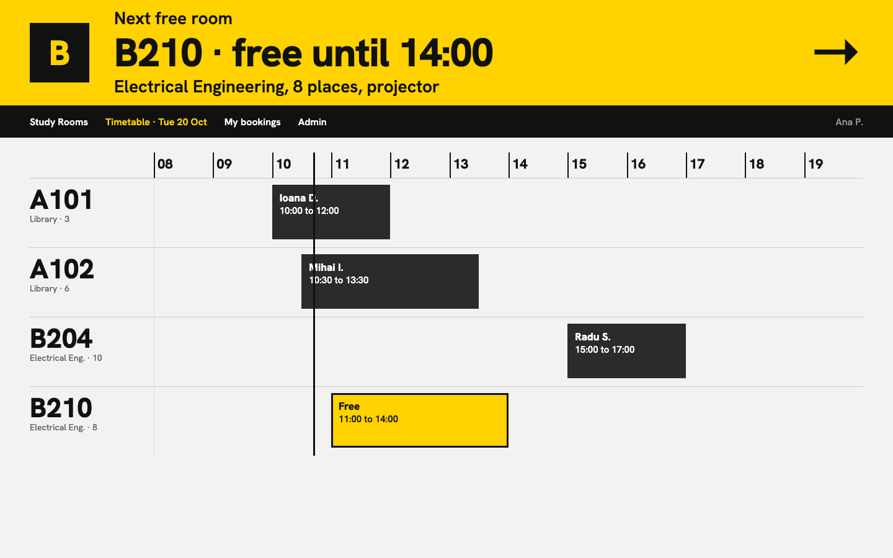
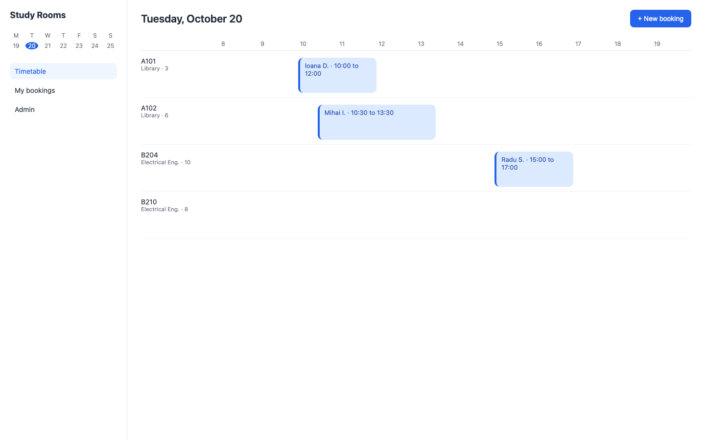

Design options for the interface
Before building the interface we looked at several ways it could look. Each sketch shows the same day of the timetable with the same rooms and bookings, so you can compare them directly. The data is made up. Click a picture to open the sketch itself.

Swiss grid timetableChosen
From the International Typographic Style: posters and timetables set on a strict grid.
- Idea
- The day is one strict grid. The hours are set very large, bookings are flat blocks of ink, and a red line marks the current time.
- How states show
- Each kind of booking has one fill and nothing else: solid black is open, an outline is on request, grey is private, hatching is a class, red is yours. A row of dots shows the places, filled for each person.
- Risk
- It can look cold if the type is set small or the red is used for decoration instead of meaning.

Highlighter on the printed orar
From the faculty timetable printout that everyone marks up with highlighters.
- Idea
- The timetable is a printed sheet and a booking is a highlighter stroke across it, one colour for each join policy.
- Risk
- The most familiar idea for a timetable app, and the colours turn into a rainbow without discipline.

Terminal yellow wayfinding
From airport sign systems: yellow panels, black type, one decision at a time.
- Idea
- The screen answers the next question first: which room is free, and until when. On a phone it shows only that.
- Risk
- Yellow everywhere fights the colours that mark states, and students know faculty timetables better than airports.

The category standard
What most booking tools look like, such as Google Calendar's room view.
- Idea
- A sidebar with a small calendar, rooms as rows, rounded blue chips for bookings and a New booking button.
- Risk
- Everyone knows how to use it, and it looks like every other booking tool.
Ideas we dropped without a sketch
These came from other visual worlds. None of them fit a booking timetable, but each one gave the chosen design one rule.
Rooms as a cast of mascots. Kept: every room has the same name plate in the same place (building, places, equipment).
Bookings as coded catalog entries. Kept: each state is shown once, never labelled twice.
Rooms as live tiles in a sliding panorama. Kept: no cards or boxes, the type and the fills carry the structure.
Bookings plotted like stars by size. Kept: the places drawn as a fixed row of dots.
The day as a black and white data field. Kept: digits of equal width everywhere, and no state shown by grey alone.